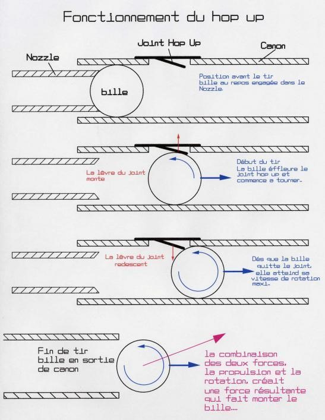

C'est quoi l'airsoft ?
L'effet Hop-Up
Premières répliques fonctionnelles
En 1993, Tokyo Marui invente et fait breveter le Hop-up. Ce système permet d'augmenter la portée des billes sans augmenter la vitesse de sortie de ces dernières. Le système s'appuie sur l’effet Magnus, découvert par le physicien allemand Heinrich Gustav Magnus (1802-1870), qui permet notamment d’expliquer les effets de balle dans les activités sportives. Le système, grâce à une pièce de caoutchouc, permet d'exercer une friction sur la bille au moment de sa propulsion, la faisant tourner sur elle-même et tel un lift au tennis permettant ainsi de la faire "voler".
